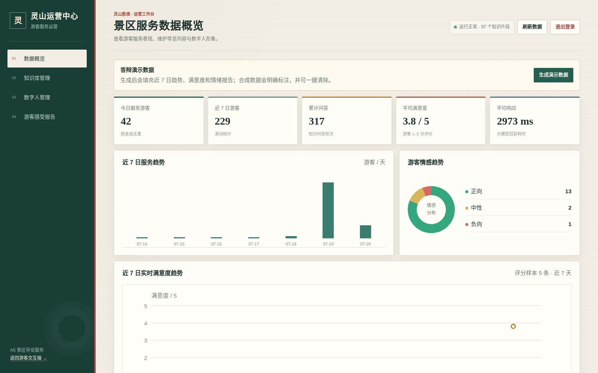
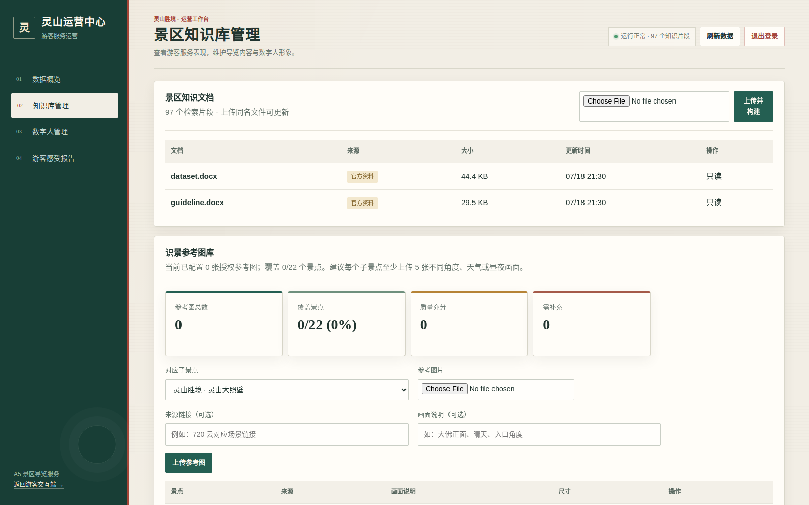
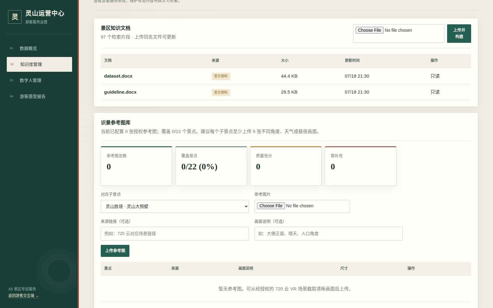
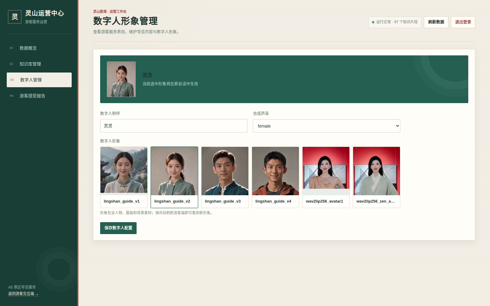
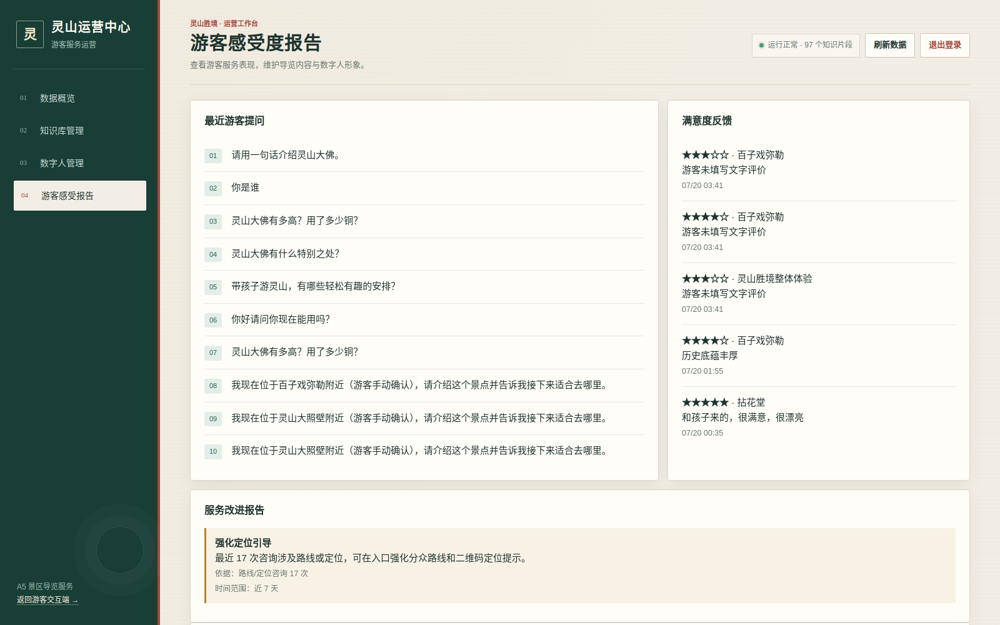
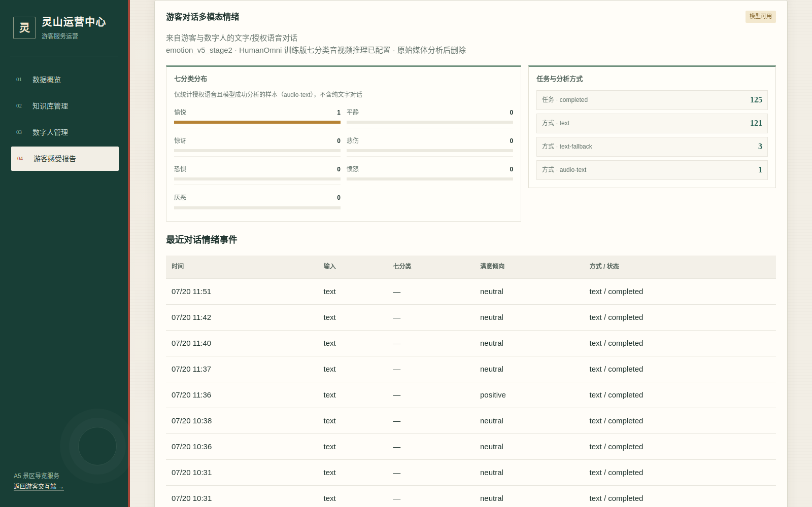
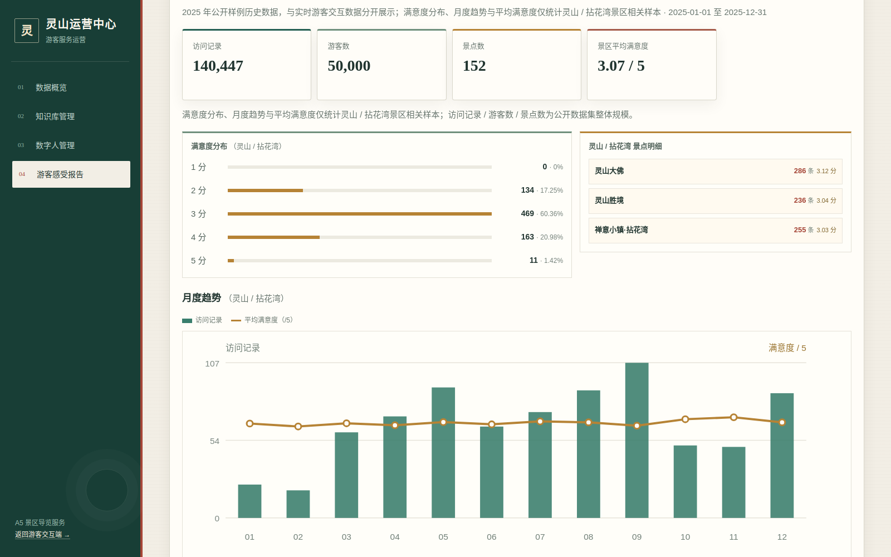

项目：景区导览服务 AI 数字人系统
赛题组别：A5 景区导览服务 AI 数字人
更新日期：2026 年 7 月 20 日
图 1 游客交互端实际运行界面（数字人已连接）
“灵山小向导·灵曦”是一套面向灵山胜境与拈花湾禅意小镇的 AI 数字人导览系统。 游客可通过网页或 Android APK 与数字人进行文字、语音和表情交互，获得景区知识问答、 个性化路线、拍照识景、位置讲解及景点评价服务。景区管理员可通过独立后台维护知识库、 识景参考图库和数字人形象，并查看实时运营指标、游客对话情绪、景点满意度和公开 XLSX 历史游客洞察。
系统的主要技术能力如下：
emotion_v5_stage2 七分类语音—文本情绪分析；模型不可用时明确标记文本降级。http://127.0.0.1:8001/docs/health 是否返回 ok=true。游客端左侧为数字人舞台，右侧为功能面板。数字人连接成功后可直接使用。
回答中用于展示路线的 →、> 等符号会在送入 TTS 前转为停顿或“接着前往”，不会按
“边”逐字朗读。
系统不采集游客人脸视频进行情绪判断。管理员也不需要上传音频或视频；管理后台展示的 多模态情绪来自游客与数字人的已授权真实语音对话。
点击“路线”，选择“历史文化”“自然风光”或“亲子家庭”，再点击“为我推荐路线”。 系统结合兴趣、景区知识和当前对话生成路线，并由数字人讲解。
图 2 个性化路线页面
识景准确率依赖参考图库覆盖度。管理员应为每个子景点准备至少 5 张不同角度、天气和昼夜 画面，并确保拥有图片使用权。
定位页提供四种使用方式：
图 3 GPS 与多源降级定位页面
当前后端配置了 9 个带公开来源的 WGS-84 近似锚点，覆盖灵山大佛、九龙灌浴、祥符禅寺、 灵山梵宫、五印坛城、梵天花海、香月花街、五灯湖和鹿鸣谷。公开点位不是景区现场测绘值， 因此 GPS 命中后只给出候选景点，游客必须确认后才开始讲解。正式部署时应由景区实测坐标替换， 并接入真实 Wi-Fi BSSID、蓝牙信标或景区地图服务。
展开“本次体验反馈”，依次选择景区、子景点和 1–5 分满意度，可填写文字建议后提交。 灵山胜境和拈花湾禅意小镇及其子景点使用统一目录，评分会写入实时数据库，并在管理员后台 的满意度趋势、景点明细和服务建议中使用。
图 4 更多设置中的情绪授权与景点满意度反馈
七分类情绪是模型根据对话推断的情感信号；1–5 分满意度是游客主动表达的服务评价。 两者含义不同，系统分开保存、分开展示，不使用 XLSX 的满意度分数训练七分类模型。
“更多设置”中可切换：
管理员后台使用独立公网端口。访问管理地址后输入管理员账号和密码，登录成功后获得 HttpOnly、Secure、SameSite 会话 Cookie。未登录用户不能访问管理页面、运营接口、 知识库修改或数字人配置接口。
图 5 管理员登录页面
测试账号：admin 密码：admin12345678
完成管理工作后应点击右上角“退出登录”。
“数据概览”展示：

图 6 实时运营数据概览
实时指标只来自系统实际产生的对话、情绪任务和游客主动评分。没有样本时显示“暂无”或 “样本不足”，不会用随机数填充。智能服务建议由近 7 天真实数据触发：系统检查负向服务方面、 平均响应是否超过 5 秒、平均评分是否偏低，以及路线/定位咨询量，并同时展示证据与时间范围。
“知识库管理”列出官方资料和管理员资料：
.docx、.txt 或 .md，同名文件视为更新。
图 7 景区知识文档管理与索引状态
更新知识库后，应在游客端至少测试三个事实问题，并确认回答引用了新文档内容。
在知识库页面向下滚动可维护识景参考图库：

图 8 识景参考图库、覆盖率和纠错质量指标
“数字人管理”可配置数字人称呼、已安装形象和合成声音。保存后对新会话生效；已有游客 会话不强制中断。服装由所选形象素材确定，表情由对话情绪策略实时驱动，不提供无效文本配置项。

图 9 数字人形象与声音配置
这里只能选择服务器已经安装并通过校验的数字人资源。新增人物外观需要先制作头像素材和 口型模型，不能仅靠填写服装文本即时生成新真人形象。
“游客感受报告”包含近期问题、主动满意度反馈、服务改进报告、多模态情绪、子景点实时 满意度和公开 XLSX 历史游客洞察。

图 10 近期游客问题、主动评分与有证据的服务改进建议
多模态情绪模块展示七类情绪分布、任务状态、分析方式和最近情绪事件：
audio-text 表示原声与 ASR 文本成功进入多模态模型。text 表示纯文字对话分析。text-fallback 表示多模态环境不可用时使用文本降级，不能宣传为真实多模态结果。queued / processing / completed / failed 表示异步任务状态。管理员不上传游客媒体。模型状态应以后台显示和 /v1/admin/emotion/status 为准；仅看到
模型文件目录存在，不等于七分类推理链路已经可用。

图 11 游客对话七分类情绪、分析方式与事件状态
赛题 XLSX 的 17 列明细会在服务启动时按文件指纹幂等导入 SQLite。当前公开数据集整体 包含 140,447 条访问记录、50,000 名游客和 152 个景点。满意度分布、月度趋势和景区 平均满意度只统计其中 777 条灵山/拈花湾相关记录；“访问记录/游客数/景点数”则明确标为 整个公开数据集规模。

图 12 灵山/拈花湾满意度分布、景点样本和月度趋势
实时数据与历史 XLSX 数据分开展示，避免把比赛提供的历史样本伪装成系统实时客流。
chat_logs：游客问题、数字人回答、引用片段、会话与响应时间。feedback：游客对景区或子景点提交的 1–5 分和文字建议。emotion_events：情绪任务、七分类、置信度、倾向、分析方式与失败原因。avatar_settings：当前数字人配置。tourism_visits：赛题 XLSX 的 17 列游客访问明细。dataset_imports：源文件指纹、导入时间、行数和存储版本。attractions：资料包 DOCX 中解析出的灵山胜境、拈花湾及子景点目录。官方资料和管理员上传资料被解析成带来源的知识片段，BGE-M3 生成 1024 维向量，FAISS 执行相似度检索。回答返回引用片段；资料不足时应说明知识库中未找到可靠依据。
ccc Conda 环境：导览 API、ASR/TTS 调用和 LiveTalking。softcup Conda 环境：BGE-M3/FAISS、SigLIP/CLIP、HumanOmni 情绪推理。上述“4×RTX 3090 + 华为云转发”是比赛期间的临时演示拓扑，不是软件的固定硬件约束； 服务可按相同接口部署到景区私有服务器或云端 GPU 实例。
cd /home/gmn/codes/cup
bash deploy/start_livetalking.sh
bash deploy/start_api.sh
start_api.sh 会检查并启动 RAG、游客 API、HTTPS/TURN 入口和独立管理端，并按源文件
指纹导入或跳过未变化的 XLSX。两条本地 Qwen 路线都在游客首次选择时，从候选 GPU
中选择满足显存门槛的空闲卡并按需启动，不在系统启动时固定占用某张 GPU；完整 7B 默认
要求 18 GiB 空闲显存，轻量 1.7B 默认要求 6 GiB。
8001：游客 HTTP 与公开 API。8443：游客 HTTPS 与 TURN/TCP。8010：LiveTalking 内部服务，不直接提供给游客。8020：RAG 内部服务，仅监听本机。8021：完整本地 Qwen2-7B OpenAI 兼容服务，按需加载。8022：轻量本地 Qwen3-1.7B OpenAI 兼容服务，按需加载。8444：管理员 HTTPS。8011：公网反向代理使用的本机管理员 HTTP 源站。curl -sS http://127.0.0.1:8001/health
curl -sS http://127.0.0.1:8020/health
curl -sS http://127.0.0.1:8001/v1/livetalking/status
curl -sS http://127.0.0.1:8001/v1/location/options
随后人工检查：
queued 进入 completed 或明确的 failed/text-fallback。APK 是原生 Android WebView 外壳，默认打开当前公网游客端。模型、RAG、语音与数字人 均在服务器运行，因此后端和网页功能更新通常无需重新打包 APK。
重新构建时执行：
cd /home/gmn/codes/cup
bash android/build-apk.sh
session_id 导出或删除游客可识别数据的 API。Unable to decode audio data，刷新页面后重新录制，并使用最新版 Chrome；当前前端会根据浏览器实际 MIME 类型封装并由后端转码。/v1/livetalking/status 是否为 ready=true。deploy/livetalking/service.log 和浏览器 WebRTC 控制台。softcup 环境是否完整。emotion_probs_from_logits，并且 mm_infer 能返回七分类分数。EMOTION_GPU 对应显卡显存和后台任务错误信息。deploy/api.log。deploy/api.logdeploy/api-ssl.logdeploy/admin-http.log、deploy/admin-ssl.logdeploy/rag.logdeploy/rag-watchdog.logdeploy/local-llm.logdeploy/livetalking/service.logdeploy/vision-clip.log（启用时）